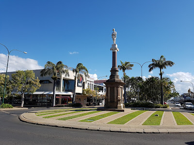

Bundaberg's Economy: A Deep Dive into Its Sugar-Centric and Agricultural Landscape

Bundaberg's economy is heavily reliant on the sugar industry, with increasing diversification into macadamia farming and various agricultural products. The city faces challenges like high unemployment rates and criticism of working conditions for backpackers.
Posted by on
Bundaberg: The Southern Gateway to the Great Barrier Reef and a Thriving Tourist Destination

As the 'Southern Gateway to the Great Barrier Reef,' Bundaberg offers diverse attractions, including stunning beaches, national parks, and unique experiences like Bundaberg Rum tours. The city's charm and natural beauty make it a popular destination for tourists and locals alike.
Posted by on
Culture and Entertainment in Bundaberg: A Vibrant Hub for Arts and Media

Bundaberg boasts a lively arts scene, featuring cinemas, galleries, and live performances. With a variety of media outlets, including local radio and newspapers, the city provides rich cultural engagement and entertainment for residents and visitors alike.
Posted by on
Sports in Bundaberg: A Diverse Landscape of Athletic Excellence

Bundaberg offers a vibrant sports scene, with clubs and competitions across various codes including AFL, basketball, rowing, rugby league, soccer, tennis, and croquet, fostering local talent and community engagement.
Posted by on
Education in Bundaberg: A Comprehensive Landscape of Learning Opportunities

Bundaberg boasts a diverse educational environment, featuring numerous public and private primary and secondary schools, as well as vocational and tertiary institutions that cater to a variety of learning needs.
Posted by on
Transport in Bundaberg: Connecting the Community to the World

Bundaberg offers a variety of transportation options, including air travel, bus services, rail connections, and access to a bustling port, ensuring efficient movement for residents and visitors alike.
Posted by on
Healthcare and Military Presence in Bundaberg: A Commitment to Community and Defense
Bundaberg provides robust healthcare services through its public and private hospitals, along with essential emergency medical transport. The city also hosts military bases that support national defense and community engagement.
Posted by on